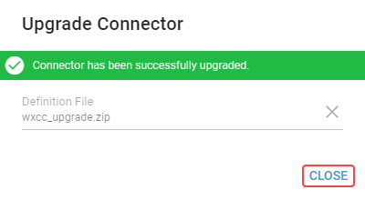

Upgrade¶
Upgrade¶
If the newer version of a connector is available, it is recommended to do the upgrade.
In case of upgrading a hosted connector (e.g. WXCC, Genesys) make sure to stop the connector windows service before starting the proccess.
Please, keep in mind, that all layout edit sessions will be discarded during upgrade. It is recommended to publish changes made in layouts before upgrading the connector.
For upgrading a connector, follow these steps:
Select a connector which you want to upgrade and click on Upgrade button.
Click on the paperclip icon and select the connector installation package.
Click on the Validate button to evaluate differences between manifest and current installation of connector.
Because of possible conflicts, reviewing the changes is required before upgrading the connector.
Detected differences will be displayed in Conflicts and Changes sections.
Possible differences:
NEW - This is a new item not yet present in currently installed version. It will be installed.
REMOVE - This item is present in currently installed version but will be removed after upgrade.
MANDATORY UPDATE - This item already exists but a new definition will be installed.
OPTIONAL UPDATE - This item already exists and a new definition is available. It will be installed if “Perform both mandatory and optional updates” will be chosen.
INCOMPATIBLE - This item definition is incompatible with the current version (merge columns) and cannot be modified to the new version.
OPTIONAL UPDATE is considered as conflict and user has to choose what should happen to record during upgrade.
INCOMPATIBLE is also considered as conflict but can not be resolved during upgrade of connector. This conflict cause whole function to be skipped regardless of selected conflict resolution mode.Hovering on detected difference’s badge will show its description.
If optional updates are detected select conflicts resolution mode. Available options are:
Perform both mandatory and optional updates
Perform mandatory updates and skip optional updates
Click on Upgrade button.
After an upgrade is done, click on a Close button.

Possible scenarios¶
Records in use
If there are any functions, grid function columns, calculation parameter types, or any other connector child records, used in a layouts, that should be deleted by an upgrade, user will get the following dialog.

Connector can not be upgraded while these records are used in layouts.
Layout’s editor will be opened in new browser tab after clicking on the name of the layout.
After clearing references to these records from segments, user has to repeat the upgrade process.
Invalid derived columns
If there are any grid columns removed or renamed, that were previously used in expressions, user will get following dialog.
User can review the expressions in the list of invalid derived columns.
By hoovering on the specific column, additional information are displayed.
Column’s edit panel will be opened in new browser tab after clicking on the name of the invalid derived column.
The Connector has been successfully upgraded, however it is highly recommended to fix all invalid expressions for all grid calculation functions to work correctly.